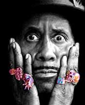
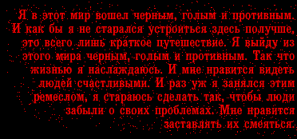

 Никакой влюбленный секретарь не писал за ним историю его жизни. Нет ученого, который вогнал бы себя на полвека в архивную пыль, собирая достоверные сведения к его книге-биографии. Мы можем знать его историю только с его слов. Правда, все его рассказы надо делить надвое, вполтора, или впятеро… Но он - не врал. Он только преувеличивал. За этими невероятными байками - маскируется вполне реальная жизнь.ХОКИНС: Нас было семеро - от одной матери и разных папаш. Моя сестра однажды мне сказала, что как только наша мать связывалась не с черным, она тут же залетала! У нее были дети от китайцев, один от белого… Мой отец был арабом. Моя мать путешествовала, как Пол Робсон.  Автобус доехал до Кливленда как раз вовремя, что бы я родился и она могла подбросить меня в ближайший приют. Через полтора года она договорилась с очень богатым племенем индейцев-черноногов, чтобы они забрали меня из приюта и вырастили.Я рос в лесу без одеял и пищи. Я научился есть кору, какую-надо, листья и цветы; я узнал, как доставать какие-надо камни из прудов и речек и готовить каменный суп, и как лечить боль и раны какими-надо растениями - все старинные домашние средства. Если бы моя мать-индеанка-черноног была бы из Африки, ее бы называли колдуньей-ведуньей; если бы она жила в Новом Орлеане, ее бы называли жрицей Вуду. Что я от нее унаследовал, я просто вложил в музыку. Впрочем, в другом менее цветистом интервью Дж.Хокинс говорит, что у его родной матери было четверо детей, и никто ее не принуждал избавиться от него. Она сама была "не ахти какой матерью". Питался ли он корой и кореньями - но в лесу, где он рос, он откопал и пианино - известно, что уже в 6 лет он умел играть на фортепиано. Мало того, есть признание, что у него был репетитор. ХОКИНС: "Я так раздражал своего учителя, что он, в конце концов, ушел. Навсегда. И вот тогда-то я и смог развить мой необыкновенный талант" Называя песни, которые особенно повлияли на его музыкальный вкус, Хокинс перечисляет ритмэндблюзовые хиты черной американской эстрады: народный распев "0l' Man River"; оперная колыбельная Гершвина, ставшая эстрадным черным романсом "Summertime"; искрометная "Caledonia" Луи Джордона - ничего нестандартного для чернокожего юноши того времени и никаких следов индейской культуры. ХОКИНС: Еще "Мамины глаза" Пола Робсона, которого я любил за то, что он был мятежником, боровшимся с системой в Соединенных Штатах в 20-х и 30-х годах; он поехал в Россию и снял там фильм, потому что здесь он не мог найти достаточно работы и отказывался быть "Дядей Томом", вроде Stepin' Fetchit, Eddie Rochester Anderson, Lena Horne, Ethel Waters, или Buckwheat.
|